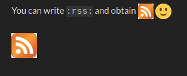

We are unready as a community if a big institution like the EU takes up ActivityPub - you can see issues in what happened to RSS when it was taken up by the NYT a link to start that story How the NY Times came to support RSS | Scripting News Annex
1 Like
I agree, and have stated at various places. In my opinion readiness is part of Organizing for SocialHub Community Empowerment i.e. it is related to numerous aspects of community organization and involvement of members, as well as capability for onboarding new people.
1 Like
let’s have a BBB to talk over these issues soon 
This just popped up agen after we have been talking about these issue here for a week https://gnu.tools
Now that is serendipity timing.
This looks like a tech/process based attempt at grassroots governance. Must say straight out, in my expirence, I have seen many process lead models like this, and they have NEVER worked.
Though it is always a good thing to try iteration. And good to contrast this to the humane/serendipity based aproch that we have been working on at the #omn
I like it.
The history of RSS is a goldmine for things to learn about whats coming up and how to mediate for a better outcome https://scripting.wordpress.com/2006/02/25/about-the-back-channel
That is a very nice page. I am not a big believer in intricate process and ceremony, especially in this kind of community. It is more about clarity, common vision, and handholds to go forwards on a variety of things we need that come up again and again.
Should we make more prominent that we have plenty of RSS feeds here ?
- all posts: https://socialhub.activitypub.rocks/posts.rss
- latest: https://socialhub.activitypub.rocks/latest.rss
- top posts: https://socialhub.activitypub.rocks/top.rss
- per category, e.g.: https://socialhub.activitypub.rocks/c/uncategorized/1.rss
- per topic, e.g.: https://socialhub.activitypub.rocks/t/outreaching-activitypub-to-the-eu-are-we-ready/1589.rss
- per tag, e.g.: https://socialhub.activitypub.rocks/tag/todo.rss
- etc., by adding a
.rsssuffix to an URL you might find more
2 Likes
Would be lovely to see some RSS icons on here
And people posting some links to that time and outlining what we can learn to help us get through the next year in #activertpub land.
At HTC forum I use the Custom header links (icons) - theme - Discourse Meta component to display 2 custom icons next to the Search icon. But there’s also the https://meta.discourse.org/t/87644 component to add entries to the hamburger menu.
You can write :rss: and obtain
Can be improved for dark theme still 

I took the SVG from the RSS article on wikipedia and naively converted it to png, so I guess if you can open it in inkscape you can export it without a background at all, that would fix it. It’s a 32x32 PNG that will be scaled down to 20x20, so you could even make it 40x40 or 60x60 I guess. I didn’t check the original ones as I guess they’re SVG.
1 Like